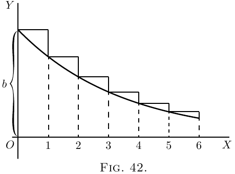

Se tomássemos $p$ como uma fração própria (menor que
a unidade), a curva tenderia obviamente a afundar para baixo,
como na Figura 42, onde cada ordenada sucessiva
é $\frac{3}{4}$ da altura da precedente.
 A equação ainda é A importância desta expressão é que, no
caso em que a variável independente é o tempo, a
equação representa o curso de um grande número de
processos físicos em que algo está gradualmente
decaindo. Assim, o resfriamento de um corpo quente é
representado (na célebre “lei do resfriamento” de Newton)
pela equação
\[
\theta_t=\theta_0 \epsilon^{-at};
\]
onde $\theta_0$ é o excesso original de temperatura de um
corpo quente sobre a de suas vizinhanças, $\theta_t$ o excesso
de temperatura ao fim do tempo $t$, e $a$ é uma constante - a saber,
a constante de decréscimo, dependendo
da quantidade de superfície exposta pelo corpo, e
de seus coeficientes de condutividade e emissividade,
etc.
Uma fórmula semelhante, Oscilações dadas a uma mola flexível morrem após
um tempo; e o decaimento da amplitude do
movimento pode ser expresso de modo semelhante.
De fato $\epsilon^{-at}$ serve como um fator de decaimento para todos
aqueles fenômenos em que a taxa de diminuição
é proporcional à magnitude daquilo que está
diminuindo; ou onde, em nossos símbolos usuais, $\dfrac{dy}{dt}$ é
proporcional a cada instante ao valor que $y$ tem
naquele instante. Pois só precisamos inspecionar a
curva, Figura 42 acima, para ver que, em cada parte dela,
a inclinação $\dfrac{dy}{dx}$ é proporcional à altura $y$; a
curva tornando-se mais plana à medida que $y$ fica menor. Em símbolos,
assim
$y=b\epsilon^{-ax}$ ou
\[
\log_\epsilon y
= \log_\epsilon b - ax \log_\epsilon \epsilon
= \log_\epsilon b - ax,\\
\text{e, diferenciando,}\;
\frac{1}{y}\, \frac{dy}{dx} = -a;\\
\text{logo}\; \frac{dy}{dx} = b\epsilon^{-ax} × (-a) = -ay;
\]
ou, em palavras, a inclinação da curva é para baixo, e
proporcional a $y$ e à constante $a$.
Teríamos obtido o mesmo resultado se tivéssemos
tomado a equação na forma A Constante de Tempo. Na expressão para o “fator de
decaimento” $\epsilon^{-at}$, a quantidade $a$ é o recíproco de
outra quantidade conhecida como “a constante de tempo,” que
podemos denotar pelo símbolo $T$. Então o fator de decaimento
será escrito $\epsilon^{-\frac{t}{T}}$; e ver-se-á, ao
fazer $t = T$, que o significado de $T$ $\left(\text{ou de} \dfrac{1}{a}\right)$ é que
este é o comprimento de tempo que leva para a quantidade original
(chamada $\theta_0$ ou $Q_0$ nos exemplos precedentes)
decair até $\dfrac{1}{\epsilon}$ do seu valor original - isto é, até $0{,}3678$ desse valor.
Os valores de $\epsilon^x$ e $\epsilon^{-x}$ são continuamente requeridos
em diferentes ramos da física, e como eles são dados
em bem poucos conjuntos de tabelas matemáticas, alguns dos
valores são tabulados aqui por conveniência.
| $x$ | $\epsilon^x$ | $\epsilon^{-x}$ | $1-\epsilon^{-x}$ |
|---|---|---|---|
| $0$ | $1.0000$ | $1.0000$ | $0.0000$ |
| $0.10$ | $1.1052$ | $0.9048$ | $0.0952$ |
| $0.20$ | $1.2214$ | $0.8187$ | $0.1813$ |
| $0.50$ | $1.6487$ | $0.6065$ | $0.3935$ |
| $0.75$ | $2.1170$ | $0.4724$ | $0.5276$ |
| $0.90$ | $2.4596$ | $0.4066$ | $0.5934$ |
| $1.00$ | $2.7183$ | $0.3679$ | $0.6321$ |
| $1.10$ | $3.0042$ | $0.3329$ | $0.6671$ |
| $1.20$ | $3.3201$ | $0.3012$ | $0.6988$ |
| $1.25$ | $3.4903$ | $0.2865$ | $0.7135$ |
| $1.50$ | $4.4817$ | $0.2231$ | $0.7769$ |
| $1.75$ | $5.755$ | $0.1738$ | $0.8262$ |
| $2.00$ | $7.389$ | $0.1353$ | $0.8647$ |
| $2.50$ | $12.182$ | $0.0821$ | $0.9179$ |
| $3.00$ | $20.086$ | $0.0498$ | $0.9502$ |
| $3.50$ | $33.115$ | $0.0302$ | $0.9698$ |
| $4.00$ | $54.598$ | $0.0183$ | $0.9817$ |
| $4.50$ | $90.017$ | $0.0111$ | $0.9889$ |
| $5.00$ | $148.41$ | $0.0067$ | $0.9933$ |
| $5.50$ | $244.69$ | $0.0041$ | $0.9959$ |
| $6.00$ | $403.43$ | $0.00248$ | $0.99752$ |
| $7.50$ | $1808.04$ | $0.00055$ | $0.99947$ |
| $10.00$ | $22026.5$ | $0.000045$ | $0.999955$ |
Como exemplo do uso desta tabela, suponha que há um corpo quente resfriando, e que no começo do experimento (isto é, quando $t = 0$) ele está $72°$ mais quente que os objetos circundantes, e se a constante de tempo de seu resfriamento for $20$ minutos (isto é, se leva $20$ minutos para seu excesso de temperatura cair a $\dfrac{1}{\epsilon}$ de $72°$), então podemos calcular a que terá caído em qualquer tempo dado $t$. Por exemplo, seja $t$ $60$ minutos. Então $\dfrac{t}{T} = 60 ÷ 20 = 3$, e teremos de achar o valor de $\epsilon^{-3}$, e então multiplicar os $72°$ originais por isto. A tabela mostra que $\epsilon^{-3}$ é $0.0498$. De modo que ao fim de $60$ minutos o excesso de temperatura terá caído a $72° × 0.0498 = 3.586°$.
Mais Exemplos.
(1) A intensidade de uma corrente elétrica em um condutor em um tempo $t$ segs. após a aplicação da força eletromotriz que a produz é dada pela expressão $C = \dfrac{E}{R}\left\{1 - \epsilon^{-\frac{Rt}{L}}\right\}$.
A constante de tempo é $\dfrac{L}{R}$.
Se $E = 10$, $R =1$, $L = 0.01$; então quando $t$ é muito grande o termo $\epsilon^{-\frac{Rt}{L}}$ se torna $1$, e $C = \dfrac{E}{R} = 10$; também
\[ \frac{L}{R} = T = 0.01. \]Seu valor em qualquer tempo pode ser escrito:
\[ C = 10 - 10\epsilon^{-\frac{t}{0.01}}, \] a constante de tempo sendo $0.01$. Isto significa que leva $0.01$ seg. para o termo variável cair em $\dfrac{1}{\epsilon} = 0.3678$ de seu valor inicial $10\epsilon^{-\frac{0}{0.01}} = 10$.Para achar o valor da corrente quando $t = 0.001 \text{seg.}$, digamos, $\dfrac{t}{T} = 0.1$, $\epsilon^{-0.1} = 0.9048$ (da tabela).
Segue-se que, após $0.001$ seg., o termo variável é $0.9048 × 10 = 9.048$, e a corrente real é $10 - 9.048 = 0.952$.
De modo semelhante, ao fim de $0.1$ seg.,
\[ \frac{t}{T} = 10;\quad \epsilon^{-10} = 0.000045; \] o termo variável é $10 × 0.000045 = 0.00045$, a corrente sendo $9.9995$.(2) A intensidade $I$ de um feixe de luz que passou através de uma espessura $l$ cm. de algum meio transparente é $I = I_0\epsilon^{-Kl}$, onde $I_0$ é a intensidade inicial do feixe e $K$ é uma “constante de absorção.”
Esta constante é usualmente achada por experimentos. Se for achado, por exemplo, que um feixe de luz tem sua intensidade diminuída em 18% ao passar através de $10$ cms. de certo meio transparente, isto significa que $82 = 100 × \epsilon^{-K×10}$ ou $\epsilon^{-10K} = 0.82$, e da tabela se vê que $10K = 0.20$ muito aproximadamente; logo $K = 0.02$.
Para achar a espessura que reduzirá a intensidade à metade de seu valor, deve-se achar o valor de $l$ que satisfaz a igualdade $50 = 100 × \epsilon^{-0.02l}$, ou $0.5 = \epsilon^{-0.02l}$. Isto se acha pondo esta equação em sua forma logarítmica, a saber,
\[ \log 0.5 = -0.02 × l × \log \epsilon, \] que dá \[ l = \frac{-0.3010}{-0.02 × 0.4343} = 34.7 \text{centímetros aproximadamente}. \](3) A quantidade $Q$ de uma substância radioativa que ainda não sofreu transformação é conhecida por estar relacionada à quantidade inicial $Q_0$ da substância pela relação $Q = Q_0 \epsilon^{-\lambda t}$, onde $\lambda$ é uma constante e $t$ o tempo em segundos decorrido desde que a transformação começou.
Para o “Rádio $A$,” se o tempo for expresso em segundos, a experiência mostra que $\lambda = 3.85 × 10^{-3}$. Encontre o tempo requerido para transformar metade da substância. (Este tempo é chamado a “vida média” da substância.)
Temos $0.5 = \epsilon^{-0.00385t}$.
\[ \begin{aligned} \log 0.5 &= -0.00385t × \log \epsilon; \\ t &= 3\text{ minutos aproximadamente}. \end{aligned} \]
(2) Se um corpo quente resfria de tal modo que em $24$ minutos seu excesso de temperatura caiu à metade da quantidade inicial, deduza a constante de tempo, e ache quanto tempo levará para resfriar até $1$ por cento do excesso original.
(3) Plote a curva $y = 100(1-\epsilon^{-2t})$.
(4) As seguintes equações dão curvas muito semelhantes:
\[ \begin{aligned} \text{(i)}\ y &= \frac{ax}{x + b}; \\ \text{(ii)}\ y &= a(1 - \epsilon^{-\frac{x}{b}}); \\ \text{(iii)}\ y &= \frac{a}{90°} \arctan \left(\frac{x}{b}\right). \end{aligned} \]Desenhe as três curvas, tomando $a= 100$ milímetros; $b = 30$ milímetros.
(5) Encontre o coeficiente diferencial de $y$ em relação a $x$, se
\[ (a) y = x^x;\quad (b) y = (\epsilon^x)^x;\quad (c) y = \epsilon^{x^x}. \](6) Para o “Tório $A$,” o valor de $\lambda$ é $5$; ache a “vida média,” isto é, o tempo tomado pela transformação de uma quantidade $Q$ de “Tório $A$” igual a metade da quantidade inicial $Q_0$ na expressão
\[ Q = Q_0 \epsilon^{-\lambda t}; \] $t$ sendo em segundos.(7) Um condensador de capacidade $K = 4 × 10^{-6}$, carregado a um potencial $V_0 = 20$, está descarregando através de uma resistência de $10{,}000$ ohms. Encontre o potencial $V$ após (a ) $0.1$ segundo; (b ) $0.01$ segundo; assumindo que a queda de potencial segue a regra $V = V_0 \epsilon^{-\frac{t}{KR}}$.
(8) A carga $Q$ de uma esfera metálica isolada eletrizada é reduzida de $20$ a $16$ unidades em $10$ minutos. Encontre o coeficiente $\mu$ de fuga, se $Q = Q_0 × \epsilon^{-\mu t}$; $Q_0$ sendo a carga inicial e $t$ sendo em segundos. Daí ache o tempo tomado por metade da carga para vazar.
(9) O amortecimento em uma linha telefônica pode ser apurado a partir da relação $i = i_0 \epsilon^{-\beta l}$, onde $i$ é a intensidade, após $t$ segundos, de uma corrente telefônica de intensidade inicial $i_0$; $l$ é o comprimento da linha em quilômetros, e $\beta$ é uma constante. Para o cabo submarino franco-inglês lançado em 1910, $\beta = 0.0114$. Encontre o amortecimento no fim do cabo ($40$ quilômetros), e o comprimento ao longo do qual $i$ ainda é $8$% da corrente original (valor limite de audição muito boa).
(10) A pressão $p$ da atmosfera a uma altitude $h$ quilômetros é dada por $p=p_0 \epsilon^{-kh}$; $p_0$ sendo a pressão ao nível do mar ($760$ milímetros).
As pressões a $10$, $20$ e $50$ quilômetros sendo $199.2$, $42.2$, $0.32$ respectivamente, ache $k$ em cada caso. Usando o valor médio de $k$, ache o erro percentual em cada caso.
(11) Encontre o mínimo ou máximo de $y = x^x$.
(12) Encontre o mínimo ou máximo de $y = x^{\frac{1}{x}}$.
(13) Encontre o mínimo ou máximo de $y = xa^{\frac{1}{x}}$.
(1) Seja $\dfrac{t}{T} = x$ ($\therefore t = 8x$), e use a Tabela acima.
(2) $T = 34.627$; $159.46$ minutos.
(3) Tome $2t = x$; e use a Tabela acima.
(5) (a ) $x^x \left(1 + \log_\epsilon x\right)$; (b ) $2x(\epsilon^x)^x$; (c ) $\epsilon^{x^x} × x^x \left(1 + \log_\epsilon x\right)$.
(6) $0.14$ segundo.
(7) (a ) $1.642$; (b ) $15.58$.
(8) $\mu = 0.00037$, $31^m \frac{1}{4}$.
(9) $i$ é $63.4$% de $i_0$, $220$ quilômetros.
(10) $0.133$, $0.145$, $0.155$, média $0.144$; $-10.2$%, $-0.9$%, $+77.2$%.
(11) Mín. para $x = \dfrac{1}{\epsilon}$.
(12) Máx. para $x = \epsilon$.
(13) Mín. para $x = \log_\epsilon a$.
{%include "buy_solutions.html" %}